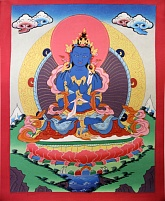

Ваджрадхара ( в переводе означает «Держатель ваджры») в тибетском Буддизме отождествляется с Ади Буддой, Ваджрадхара это изначальный Будда олицетворяет Дхармакаи, пустотную природу ума. Ваджрадхара символизирует недвойственность, мгновенное состояние просветления, эманациями его являются пять Дхьяни Будд.
В иконографии его изображают темно синего цвета, восседает он в позе медитации на лунном и солнечном дисках расположенных на распустившемся лотосе. Положение рук на груди крест на крест в правой он держит ваджру, а левой колокольчик, который олицетворяет мудрость и является символом женской духовности, праджни. На тханках и в статуэтках его могут изображать как в одиночной форме, так и в союзе Яб-Юм.
Мантра Ваджрадхары: Ом А Ваджрадхара Хум Хум